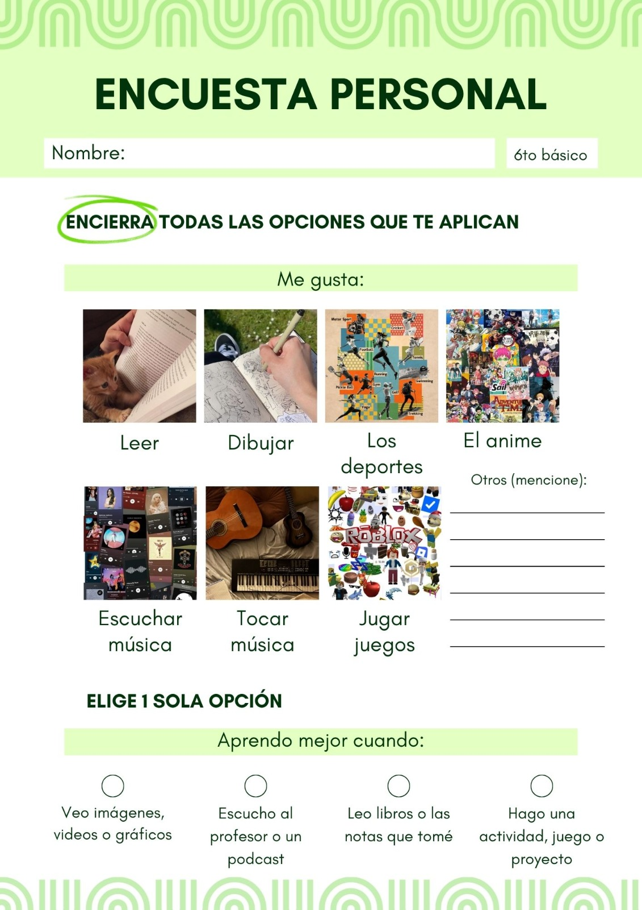
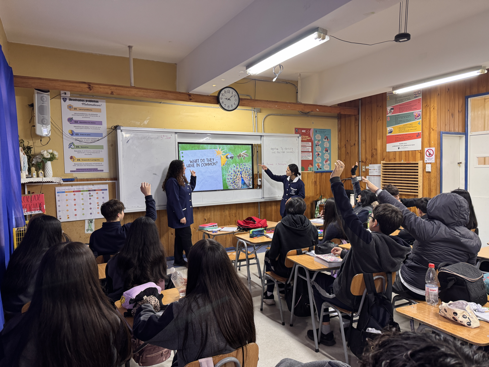
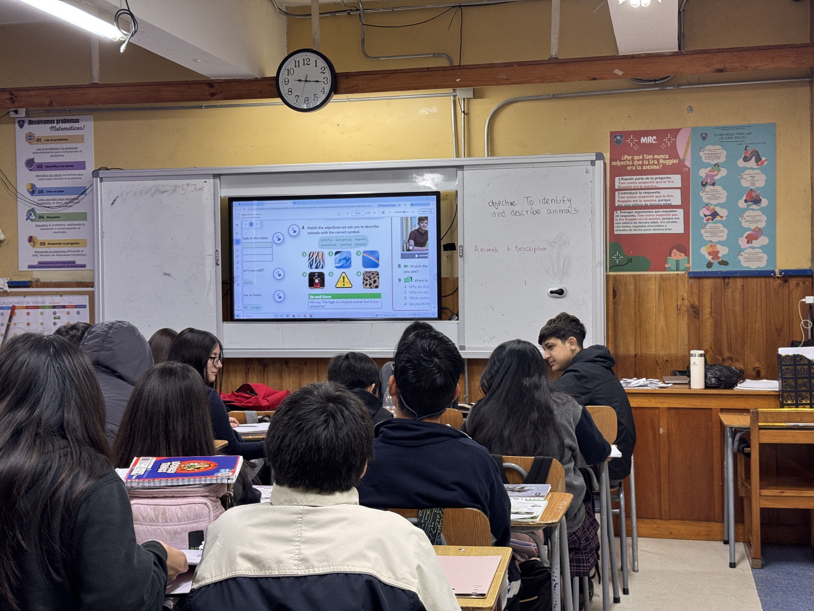
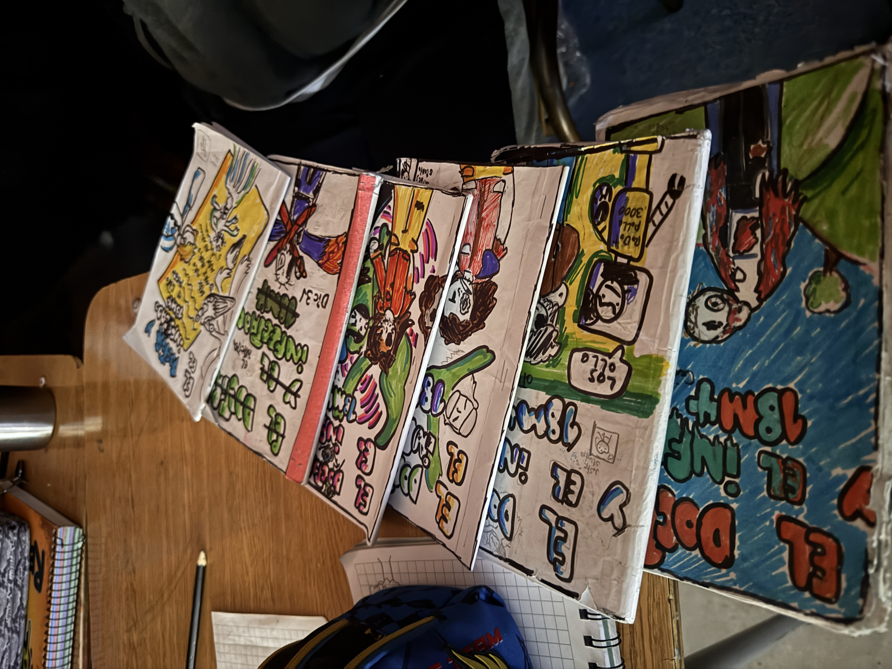
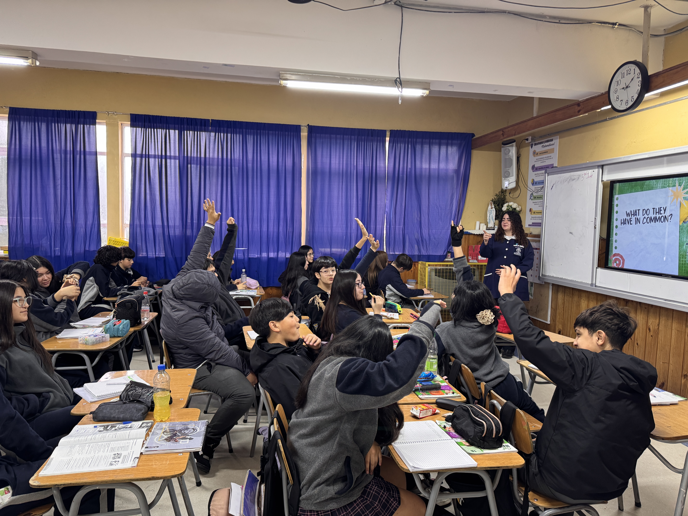
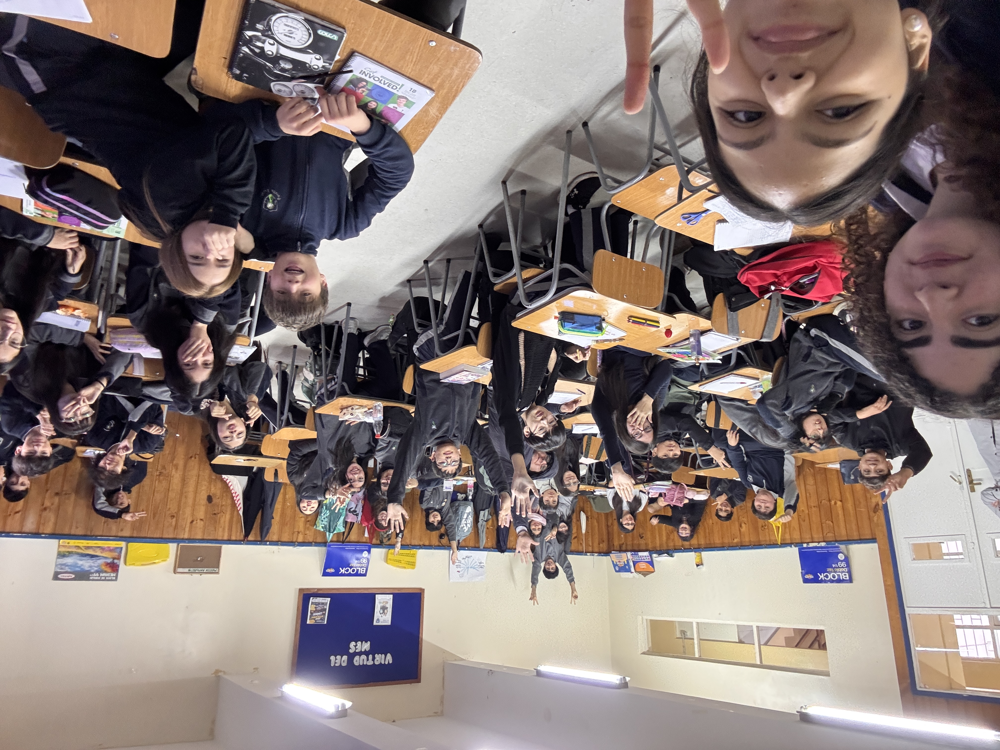

Welcome to my reflective teaching portfolio. This space documents my journey as a
pre-service English teacher — exploring strategies, reflections, and evidence from my practicum experience.
Paula Rodríguez Leyton
Pre-Service English Teacher
Welcome Message
This portfolio represents my growth, challenges, and achievements during my teaching practicum. Each section
reflects a different dimension of my development as an English teacher — from understanding my students' needs
to designing inclusive lessons and managing a diverse classroom with care and intention.
I invite you to explore my reflections, lesson plans, and evidence of learning. Thank you for being part of
this journey.
Portfolio Sections
Navigate through each chapter of my teaching journey
01
Introduction
Biography & teaching philosophy
02
School & Course
Context and institutional overview
03
UDL Designer
Universal Design for Learning
04
Diversity
Inclusive & differentiated instruction
05
Classroom Management
Strategies & interventions
06
Final Reflection
Synthesis and growth
07
Evidence
Gallery of materials & artifacts
SECTION 01
Introduction
Biography
Hello! My name is Paula Rodríguez and I am already in my fourth year of English Pedagogy major.
I have learnt that for designing a class you must consider many factors such as special needs,
characteristics of the students, environment, learning pace, learning styles, and many more.
I am passionate about learning the social emotional dimension of my students, because it is an essential
part in order to achieve our learning goals. I believe that teaching is not only about contents, but also
giving your students the chance to share a little of their world with you. In the end, you could be the
person who can help a student to become the person they aspire to be.
University
San Sebastián
Program
English Program
Year
4th year
Teaching Practice Reflection
Strengths
Write about your teaching strengths here. What do you do well in the classroom? What natural abilities do
you bring to your students?
Weaknesses
Reflect honestly on areas for improvement. What challenges do you face? What aspects of teaching require
more development?
Fears
What concerns or fears do you have as a pre-service teacher? How do these affect your practice and
professional growth?
Expectations
What do you hope to achieve during your practicum? What kind of teacher do you aspire to become?
Introduction Video
SECTION 02
School & Course Description
An overview of the institutional context, community profile, and the specific English course I taught.
Formar estudiantes comprometidos con Jesucristo, María Inmaculada y su Iglesia, inspirado en el legado de
la Beata Paulina Von Mallinckrodt, promoviendo en ellos competencias, autonomía, pensamiento reflexivo y el
respeto a la diversidad, que les permita convertirse en personas integrales al servicio de los demás.
Vision
Ser una comunidad educativa inclusiva, que eduque para la vida en excelencia valórica y académica,
comprometida con la formación de personas integrales y consecuentes con la fe cristiana-católica, que les
permita construir una sociedad más justa, fraterna y solidaria, a través de su vivencia familiar, eclesial y
social.
Objectives
They focus on the holistic development of their students, combining academic excellence with a strong
Christian and values-based education.
Community
The school community is warm and affectionate; every member is friendly, always greeting students and
waiting for them at the entrance, which adds a special touch. They've created a truly positive atmosphere,
and when it comes to teacher-student relationships, they appear to be fairly close.
Course Profile 1
Course Name
Idioma Extranjero Inglés
Grade
6th Grade A
Number of Students
44 students
Weekly Hours
6 hours
Language Proficiency Target
A2
Course Description
6th grade A is a group of 44 students, 8 of whom have special educational needs. They are a very talkative
class, and most of them find it difficult to pay attention. However, they always show a positive attitude
toward the lesson and are quite excited to participate. Their interests lean toward drawing, various
cartoons, and manipulable objects such as slime, dough, etc. The class uses the Oxford textbook "Learn with
Us," and their current English level is A1 to A1+. They require many classroom management strategies due to
their short attention spans, and a communicative approach is used for their instruction.
Course Profile 2
Course Name
Idioma Extranjero Inglés
Grade
8th Grade B
Number of Students
46 students
Weekly Hours
6 hours
Language Proficiency Target
A2
Course Description
8th grade is a group made up of 46 students, 7 of whom have special educational needs. It is a large class,
yet quite participative and well-behaved. Most of them have a good command of English and understand almost
everything when spoken to in English. They show an interest in drawing, books, manga, Pokémon, and anime, as
well as in the characters from "Sanrio." The majority have a visual learning style and show greater
engagement in class when interactive games are involved. The teaching methodology used by the teacher is
mostly the communicative approach, and she constantly interacts with her students. They work with a
Macmillan textbook, and for the most part, their level is A2.
School Tour / Video
SECTION 03
Teacher as a UDL Designer
Applying Universal Design for Learning principles to create accessible and flexible learning
experiences for all students.
UDL Principles Applied
Principle 1
Multiple Means of Representation
How are students provided with different ways to access information? (visual, auditory, text-based)
The students are provided with a variety of materials that help them access the
information presented. For instance, they not only have a visual presentation to understand the contents,
but the information is also explained through real-life examples. In addition, they rely on the English
lesson book, which allows them to practice and work autonomously.
Principle 2
Multiple Means of Action & Expression
How are students given options for demonstrating their learning and communicating ideas?
Students are not only given the opportunity to participate in class to express and
demonstrate their knowledge, but they are also assigned different tasks, such as completing worksheets,
exercises in the workbook, and presentations. Moreover, they are sometimes asked to explain the content to
their classmates so that they can share their own ideas and learn from their peers.
Principle 3
Multiple Means of Engagement
How are students motivated and challenged to maintain interest and persistence in learning?
To maintain students’ engagement and motivation, it is crucial to incorporate elements
that capture their attention. For example, whenever an intervention is carried out, we include an emotional
check-in with images they can relate to. In addition, students enjoy activities that include visual and
technological aids, so we often use Wordwall for different tasks and activities. Moreover, collaborative
tasks are essential for maintaining their participation and motivation, as they allow students to solve more
challenging activities by helping and supporting one another.
Student Needs Survey
Questionnaire applied to students to understand their learning preferences.

Class Profile 6th Grade
24%
Reader Learners
18%
Visual Learners
37%
Auditory Learners
21%
Kinesthetic Learners
Narrative Summary
In 6th grade, the majority of students incline for doing sports and listen to music. 18% of the students like to play games, while only 5% prefer to read. 12 students showed their passion for drawing, and 9% of them like anime. According to the survey taken, 37% of the students learn by listening to the teacher or a podcast, 18% by watching videos, images or graphics, 21% learn mostly by playing games, doing activities, or projects, and 24% of them prefer to read their notes and books to understand better.
Class Profile 8th Grade
11%
Reader Learners
26%
Visual Learners
13%
Auditory Learners
50%
Kinesthetic Learners
Narrative Summary
The results of our survey showed that 22% of students enjoy listening to music, 22% (or 20 students) play sports, 18% prefer playing online games, 12% like drawing, 11% are avid readers, 7% play one or more instrument, 5% watch anime and 3% have other interest and hobbies.
With the information gathered from the survey, which showcased the different learning styles of students, as proposed by Neil Fleming with the VAK model, we planned all of our classes to ensure most of the students would have multiple means to learn, as requested in CAST’s UDL principles. Another theory that played a key role in the structure of our lessons was Gagné’s Conditions of Learning theory, as we wanted the students to truly learn and internalize the content based on the different stages of information processing. Furthermore, all of our lessons were carefully made with our students’ characteristics in mind, as well as the MBE, because learning cannot occur without suitable conditions for leaning. This mix of theories resulted in highly sucessful classes that had students not only engaged, but participating and learning, which was our goal every single time we planned a class or activity.
SECTION 04
Diversity in the Classroom
Reflecting on inclusive strategies, differentiated instruction, and the richness that
diverse learners bring to the English classroom.
Inclusive Strategies Used
Differentiated Instruction
To implement differentiated instruction in our classes, we adapted the content to meet the students’ needs. We not only set learning goals that were achievable for them, but also designed materials and presentations that incorporated a variety of tools to access their different learning styles. For instance, we included images, emojis, and real-life situations to facilitate understanding. Additionally, we scaffolded the content and continuously checked for comprehension by asking metacognitive questions and ICQs. These strategies helped ensure that all students understood the concepts being taught and were able to actively participate in the learning process.
Cultural Responsiveness
To incorporate cultural responsiveness, we considered the students’ backgrounds and experiences by relating the content to their daily lives. For example, when teaching places in town, we connected the content to locations that students can find around their city, Puerto Varas. This approach helped increase their engagement and allowed them to connect new vocabulary with familiar places and experiences. Moreover, students were frequently asked questions that encouraged them to express their preferences, opinions, and personal experiences. This not only promoted meaningful participation but also created opportunities for students to learn from one another and appreciate different perspectives within the classroom.
Collaborative Learning
To promote collaborative learning, we implemented a variety of activities that required students to work with their peers. Since there is a wide range of english proficiency levels within the classroom, we consider peer support to be highly valuable. We observed that when a student does not fully understand the content, their classmates often help by providing explanations. Additionally, we encourage collaborative participation by inviting students to restate or explain concepts that have already been discussed. This strategy not only reinforces understanding for the student providing the explanation but also helps clarify concepts for their peers, helping to create a supportive and cooperative learning environment.
Scaffolding Techniques
To scaffold learning, we always begin the class by activating students’ prior knowledge so that we can gain a clear understanding of what they already know. Building on this information, we gradually introduce new content and connect it to their previous experiences and knowledge. Whenever students do not understand a concept, we reformulate explanations using simpler language, visual aids, examples, and real life situations. We also model tasks before asking students to complete them independently and provide guided practice to ensure they feel confident. Additionally, we use ICQs throughout the lesson to monitor understanding and clarify misconceptions.
Presentation / Supporting Material



SECTION 05
Classroom Management Implementation
Two documented intervention cases showcasing strategies, skill integration, and inclusive
activities.
1
Intervention Case 1
Case Description
Regarding the student´s level, they had an A2 level of English, so for most of the words taught in this lesson, they were capable of understanding the meaning. The teachers (Paula and I) used English most of the time during the class; however, when an explanation was presented, Spanish was used to make sure every student comprehended the contents. As for the methodologies, they seemed to participate most of the time, and they could express their own ideas, so the communicative approach was suitable for them. The content they were seeing was regarding the vocabulary of “places in town” of the unit, so they were familiar with some words but not all of them. For this reason, we thought about connecting the vocabulary of our lesson with real-life situations, in which they could imagine some things that relate to what they usually see in their daily lives. As for the materials, we mostly be relied on a Canva presentation, and we also did a bingo game, for which we designed bingo cards.
Strategies Applied
Classroom management wise, we utilized a variety of strategies and techniques, starting from asking the students how they felt before starting our class, which is based on x theory that argues that SEL is highly important to achieve meaningful learning (Asubel). Furthermore, we incorporated rules of the class to model expected behaviour as well as letting them know there would be consequences if the rules were broken, which helped us reduce unwanted behaviour. Aditionally we called them out in Spanish if their behaviour needed to be corrected so nothing could be lost in translation. However, that was rarely needed since we focused mainly on preventative measures, so we planned our lessons to have them engaged at all times, to prevent unwanted behaviours.
Regarding our approach to inclusivity and diversity, we built fluency with graduated support for practice and performance, we had visual aids throughout the class, alongside the written information, which we shared orally as well, to provide them with multiple "media" for communication, we set meaningful goals and connected them to their prior knowledge to build new learning, as well as many other techniques, since we wanted to include as many descriptors of CAST's UDL guidelines, which call for multiple means of engagement, representation, as well as action and expression. This intentionality can be observed in our lesson plans, where each and every descriptor we included is written down.
Outcome
This resulted in a successful class, where most students were not only engaged, but also learnt and had positive comments regarding the class itself. The class developed their oral skills, as well as their listening skills, when they had to not only understand what their classmates were saying, but they also had to puzzle the animals together in their heads with the vocabulary words given by us or their classmates.
Supporting Image

2
Intervention Case 2
Case Description
During this intervention, we worked with 8th-grade vocabulary that was part of the first unit related to places in town. In general terms, this grade has not demonstrated critical misbehaviors during class, on the contrary, they actually have remarkable conduct during the lessons. Nonetheless, we know that classroom management is not only about preventing or taking control of the class, but also about reinforcing good actions, as well as having an established routine to set clear expectations, which is what we applied the most during this intervention, as it was our first one.
Strategies Applied
What classroom management strategies did you use?
During the lesson we mostly used strategies that involved different techniques that helped maintain the conditions to support a good environment. Firstly, we introduced the class by asking them how they feel in which we included an emotional check-in. This way, we prepare and understand the students’ mood towards the class, making slight changes in our plan to adapt it accordingly to their needs. Moreover, we also incorporated the class rules, so this way they know what expectations we have towards them, and we establish some agreements they must follow consistently as it brings consequences if they don’t. Finally, it is important to mention that classroom management was also applied by building a positive relationship with the students, since they will be more willing to do the activities and be more respectful towards each other.
Skills Integration
How did you integrate language skills (reading, writing, speaking, listening) while managing this case?
Since this class was focused on identifying vocabulary, we mostly integrated listening and speaking, as our activities required students to listen to some descriptions and also say the vocabulary out loud. Due to the fact that they knew the class rules, whenever they wanted to speak, they had to raise their hand. Therefore, if they all started to say the answers out loud, we reminded them to raise their hand so that we could give them the right to speak. Moreover, when the activity in which they had to listen to descriptions was carried out, we actively checked their understanding and monitored whether everybody understood. In this way, we prevented potential issues or disruptions during the activity.
Outcome
What was the result? How did the student(s) respond?
As mentioned before, this grade generally has good behavior, so by maintaining these dynamics to foster a positive classroom ambience, they will continue to have positive conduct. Finally, it is important to highlight that applying these techniques and activities helped them to be engaged and participative throughout the entire lesson, which is a positive response from the students. This aligns with Vygotsky's (1978) sociocultural theory, which suggests that learning can happen through social interaction and participation in meaningful activities.
Supporting Image

Gallery: Images, Lesson Plans & Materials
Upload image or material 1
Upload image or material 2
Upload image or material 3
Upload image or material 4
Upload image or material 5
Upload image or material 6
SECTION 06
Final Reflection
A synthesis of my practicum journey.
Guided Reflection Questions
Q01How has your understanding of teaching changed throughout this practicum?
Q02What was the most significant challenge you faced and how did you overcome it?
Q03How did you apply UDL and inclusive practices in your classroom?
Q04What does classroom management mean to you now, after this experience?
Q05What kind of teacher do you want to become and what steps will you take?
A Final Image
Upload a meaningful photo from your practicum experience
SECTION 07
Evidence Section
A curated gallery of images, videos, lesson plans, and materials collected throughout the
practicum.
No evidence items yet
Click "Add Evidence" to start uploading your materials.